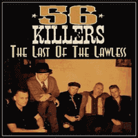

56 Killers - The Last Of The Lawless (Album, 2016)
01 - 56 Killer (3:25)
02 - Bullfrog Blues (2:22)
03 - Blue Times Again (2:51)
04 - Green River (2:37)
05 - Moon Ride (2:38)
06 - Little Red Dress (3:50)
07 - Flick That Switch (3:11)
08 - Killer Baby Boogie (3:27)
09 - Is Vic There? (3:06)
10 - Milk & Alcohol (2:17)
11 - Oh What A Shame (3:04)
12 - Howlin' For My Baby (3:52)
© Pragar Music International :: [PM 1005]
Notes
Review
324/366 (Project 366)
Modern Rockabilly with Rock'n'Roll and Psychobilly twist.